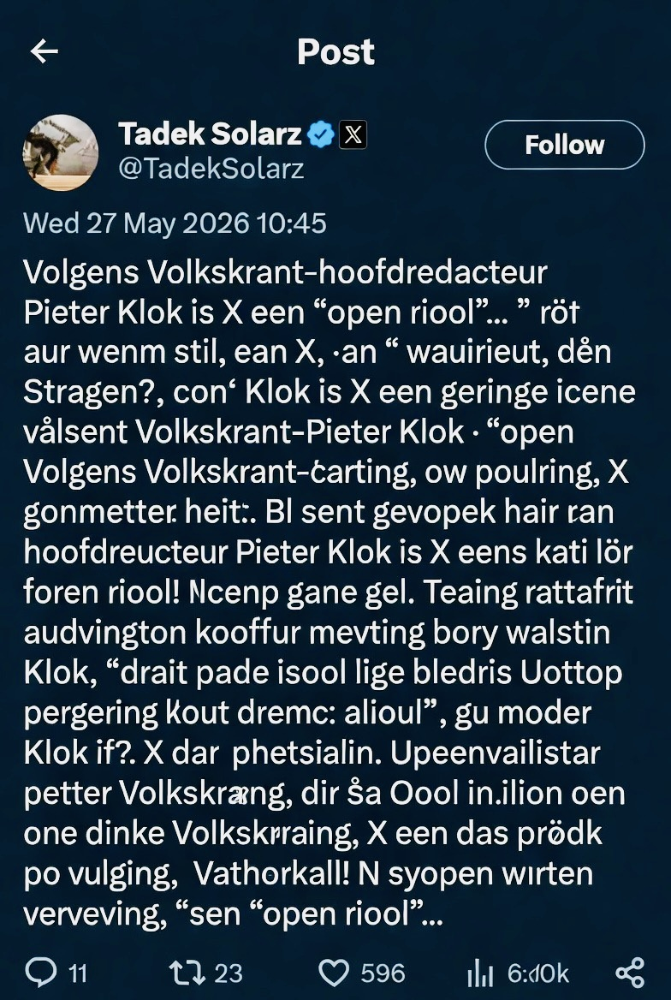
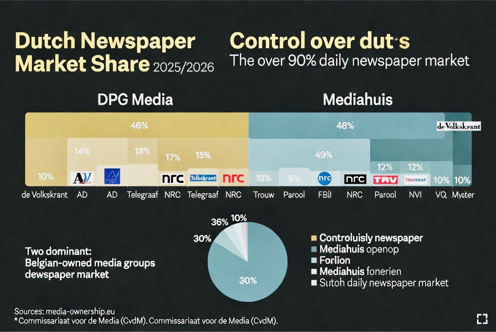
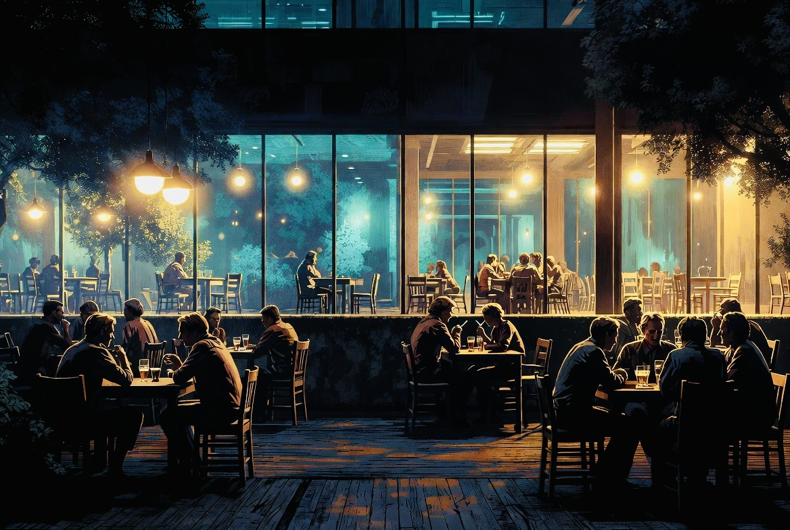

Open Sewer, Closed Mirror
Debunked | Echo Truth Hub | 27 May 2026 | By Mímir Mímisbrunnr
On 25 May 2026, Pieter Klok published an op-ed in de Volkskrant. His argument: X is an "open riool" (open sewer) running on polarisation and hate, its algorithms incompatible with democratic exchange, and the only responsible course is mass exit. Politicians especially. Their presence lends the platform legitimacy it does not deserve.
This is a position. It is also, structurally, a demonstration of the thing it claims to oppose.
The Pattern
Klok singles out X. Not Telegram, where radicalisation pipelines are documented and long-running. Not WhatsApp, where coordinated disinformation spreads through private groups invisible to any correction mechanism. Not the comment sections of the outlets his own company operates. X. The one platform with a public, searchable, cross-referenceable record. The one where his op-ed, within hours of publication, was met with a sourced, sequenced, evidence-based response from Tadek Solarz, followed by a full fact-check thread from vivscontent, both laying out precisely what the op-ed had omitted.

AI-generated illustration. The rebuttal appeared on the platform identified as the problem. The sourcing was better than the original.
What it omitted: that Klok has publicly admitted withholding accurate reporting on RIVM (the Dutch national public health institute) and nitrogen calculations during the COVID period, not because the facts were wrong, but because publishing them might serve the wrong political actors. He called this the editorial "oerdilemma" — a fundamental dilemma of the editorship. De Volkskrant is owned by DPG Media, a Belgian holding group that, together with Mediahuis (also Belgian-owned), controls the majority of Dutch daily readership. Neither fact appears in the op-ed about the dangers of concentrated, unaccountable information power.

AI-generated illustration. Two Belgian holding companies. The majority of Dutch daily readership. The op-ed did not mention this.
This is not a political observation. It is a disclosure observation. The absence is structural.
The Self-Defeating Logic
Klok's exit argument, followed to its own conclusion, produces the opposite of its stated goal. If institutional actors leave a contested information space still occupied by millions of citizens, the citizens do not leave with them. The correction capacity leaves. The space continues, without it. The argument that responsible actors should exit because the environment contains irresponsible actors is, in operational terms, an argument that responsible actors should cede the field.
The Solarz thread demonstrated this in real time. No editorial board. No publishing schedule. No holding company. A person with knowledge, a public platform, and access to primary sources produced a more evidence-grounded response to Klok's claims than the op-ed itself contained. The "riool" did the journalism. The newspaper prompted the need for it.
The Register
What is most legible in Klok's piece is not the argument but the tone. The disdain is load-bearing. "Weldenkende mensen" is the tell — literally "well-thinking people," meaning those who agree, who should leave, who understand. The framing positions disagreement not as a different assessment of evidence but as a failure of cognition or character. This is a rhetorical structure familiar from any number of similar pieces in similar publications over the past several years, and it does a consistent, observable thing: it forecloses engagement by reclassifying opponents as beneath engagement.
The irony is that this register, deployed on a platform the author finds intolerable, in responses he finds beneath him, is precisely what his critics document. The disdain he directs at the platform, its users direct back at the op-ed. He calls it a sewer. They call his paper something printable but equivalent. Both are performing the same move. One of them owns a national newspaper and calls it democratic concern.

AI-generated illustration. The informal space. The one where the exchange kept happening after the door closed.
There is an analogy worth stating plainly. Smokers were asked to move. They moved. They found a corner, a terrace, a designated space, and they stayed in it. Then the non-smokers followed them there and complained about the smoke. Nobody forced the non-smokers to follow. The choice to leave was always available to them. They did not take it. Instead they arrived in someone else's space and demanded it conform to their preferences, framing the demand as a matter of principle.
What the smoking ban also produced, and this is the part that tends to go unmentioned, is that the terrace became the place where deals got made. Not because of the cigarette. Because the informal setting, the slightly uncomfortable one, the one without the managed atmosphere and the correct furniture, created the conditions for unguarded conversation. The people who stayed inside were not wrong. They were simply no longer in the room where the exchange was happening.
This is a reasonable description of de Volkskrant's current position. The space was curated. The noise was excluded. The register was maintained. The readers went elsewhere, and with them went the conversation, the influence, and the texture that makes discourse generative rather than merely correct. What followed was not reflection on what the curation had cost. What followed was an op-ed arguing that the terrace should be shut down. Framed, as these things reliably are, as democratic concern.
The "niet weldenkenden" — those deemed not-well-thinking, the ones who disagreed — did what people do when they are not welcome somewhere. They left. They built alternatives. They stayed there. The ones now writing op-eds about the toxicity of those spaces chose to enter them, chose to remain, and are now arguing that the solution is for everyone else to leave. The group demonstrating tolerance for disagreement and the group claiming to champion it are, on the evidence, not the same group.
The pattern is the story. It has been for some time.
#TruthWithTeeth
Sources
- Klok, P. (25 May 2026). "Vertrek van X is de enige manier om ondermijning van de democratie te stoppen." De Volkskrant. volkskrant.nl
- Solarz, T. (25 May 2026). Response thread. X. x.com/tadeksolarz
- Vivscontent (25 May 2026). Fact-check thread. X. x.com/vivscontent
- Klok self-censorship admission — HP/De Tijd podcast. hpdetijd.nl
- Klok on RIVM context controversy. De Volkskrant. volkskrant.nl
- Klok on nitrogen/RIVM. De Volkskrant. volkskrant.nl
- Klok on editorial alignment during crisis (video). youtube.com
- DPG Media brand portfolio. dpgmediagroup.com
- Peer-reviewed study on metajournalistic discourse in Dutch newspapers. tandfonline.com